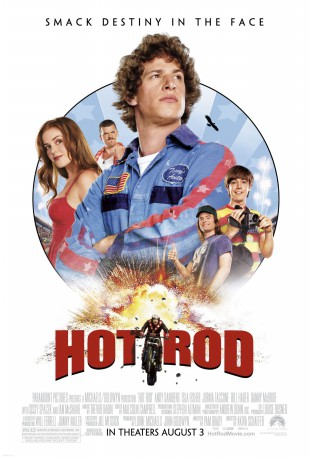
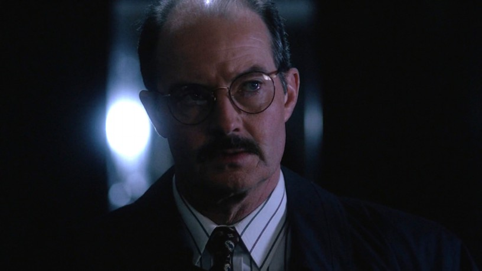
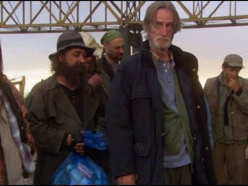

#6497 Hot Rod - Mit Vollgas durch die Hölle
Alternativ: Hot Rod
 
 IMDB-Wertung: 6.7 / 10
IMDB-Wertung: 6.7 / 10  Metascore: 0
Metascore: 0 
Rod Kimble is a naïf, a slacker living in a small US town with his mom, his younger brother, and his stepfather whose respect he craves. He also misses his dead dad, whom he thinks was Evel Knievel's back-up. Rod, a man-child, believes that he is a stunt man. When his stepfather needs an operation, with help from his brother and his slacker pals, Rod hatches a plan to set a school-bus-jumping record on his moped. First, his crew and he have to raise money to rent the buses and build the ramp. Trouble is, Rod's inept at his chosen career. Looming failure is complicated by the return of Denise, Rod's next-door neighbor and secret heartthrob, who is home from college. Is public humiliation at hand?
Jahr: 2007
Dauer: 87 Minuten
FSK: 12
Land: USA Studio: Paramount Home EntertainmentTonspuren: DD5.1 - ,
Untertitel:
Auflösung: 1080p (1920x832) Größe: 8417 MB
Genre: Komödie
Regisseur: Akiva Schaffer
Drehbuch: Pam Brady
Soundtrack:
Darsteller:
 Andy Samberg als Rod Kimble
Andy Samberg als Rod Kimble Jorma Taccone als Kevin Powell
Jorma Taccone als Kevin Powell Bill Hader als Dave
Bill Hader als Dave Danny McBride als Rico
Danny McBride als Rico Isla Fisher als Denise
Isla Fisher als Denise- Sissy Spacek als Marie Powell
 Ian McShane als Frank Powell
Ian McShane als Frank Powell Will Arnett als Jonathan
Will Arnett als Jonathan Chris Parnell als Barry Pasternack
Chris Parnell als Barry Pasternack- Chester Tam als Richardson
- Mark Acheson als Homeless Dude
- Brittany Tiplady als Maggie
 Ken Kirzinger als Trailer Guy
Ken Kirzinger als Trailer Guy Britt Irvin als Cathy
Britt Irvin als Cathy- Alana Husband als Waitress
- Andrew Moxham als Sullivan
 Alvin Sanders als Furious Boss
Alvin Sanders als Furious Boss- Carly McKillip als High School Girl
- Donavon Stinson als Heckler
-  Doug Abrahams als Police Officer
-  Frank C. Turner als Fisherman
 Gillian Barber als Riot Singer
Gillian Barber als Riot Singer- Carrie Ruscheinsky als Hippie Girl
- Josh Homme als Gown
 Aaron Au als Taco
Aaron Au als Taco- Brett Chan als Grilled Cheese
- Meghan K. Lees als Girl in Crowd , uncredited
- Elizabeth McCarthy Meek als Grocery Store Mom , uncredited
- Queens of the Stone Age als Gown , uncredited
- Akiva Schaffer als Derrick , uncredited
- Terri Anne Taylor als Angry Mom
- Chris Eastman als EMT
- Paulo Ribeiro als EMT
- Paul Herbert als EMT
- John Destry als Projectionist
- Henry Michaels als Boy Stealing Wheelchair
- Sammy Fattedad als Riot Singer
- William S. Taylor als Riot Singer
- Mi-Jung Lee als Newswoman
- Charlie Hope als Autograph Kid
- Matthew Gallagher als Autograph Kid
- Viktoria Kampbell als Autograph Kid
- Titan Toyish als Gown
- Joseph Castillo als Gown
- Alain Moschulski als Gown
- Troy Van Leeuwen als Gown
- Jesse Haddock als Crowd Member
- Ometa Gittens als Crowd Member
- John Burnside als Scrooge
- Ryan Hess als Construction Worker , uncredited
Datei: X:\2007(G-M)\Hot Rod - Mit Vollgas durch die Hölle (2007, FSK12, 1920x832).mkv seit 28.06.2017
Festplatte: HD 2007(A-Z)-2008(A-F)
 Es gibt insgesamt 64 Filme in der Gruppe '2007(G-M)'
Es gibt insgesamt 64 Filme in der Gruppe '2007(G-M)'